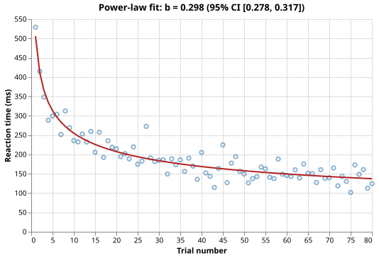

Fitting a Learning Curve to Experimental Data
27.1 The Problem
- Practice improves performance: reaction times fall and error rates decrease
- Learning curves quantify how quickly this improvement happens and how much improvement can be expected with more practice
- Our approach:
- Generate 80 per-trial reaction times from a power-law model with added Gaussian noise.
- Fit the model \(\text{RT}(n) = A \cdot n^{-b}\) using
scipy.optimize.curve_fit - Extract the learning rate exponent \(b\) and compute a 95% confidence interval from the covariance matrix returned by the fitter
- Plot the raw data with the fitted curve overlaid.
Why is a power-law model used for learning curves rather than a linear model?
- Because a power-law always has a lower sum of squared residuals than a line.
- Wrong: which model fits better depends on the data; linear models can outperform power laws when the true relationship is linear.
Because a power-law captures the empirical observation that early practice produces large gains and later practice produces smaller but continuing gains. : Correct: the power law RT = A * n^(-b) is a convex decreasing function whose slope flattens with increasing n, matching the diminishing-returns pattern observed in motor and cognitive skill learning.
- Because a power-law guarantees that reaction times reach zero at large n.
- Wrong: A * n^(-b) approaches zero asymptotically but never reaches it; real reaction times never fall to zero because every response requires some irreducible motor and cognitive processing time.
- Because power-laws are easier to fit than lines with scipy.
- Wrong: nonlinear fitting is more complex than linear fitting; the power-law is used because it describes the data well, not for computational convenience.
27.2 The Power-Law Learning Model
- The model is \(\text{RT}(n) = A \cdot n^{-b}\) where:
- \(n\) is the trial number (1, 2, …, N)
- \(A\) is the predicted reaction time on trial 1 in milliseconds
- \(b > 0\) is the learning rate exponent: larger \(b\) means faster improvement
- Taking logarithms gives \(\ln \text{RT} = \ln A - b \ln n\), showing that the power law is linear in log-log space
- The parameters \(A\) and \(b\) are estimated simultaneously by nonlinear least squares rather than log-linearizing, which avoids distorting the noise structure when reaction times have additive Gaussian noise.
27.3 Generating Synthetic Trial Data
- The true parameters are \(A = 500\) ms and \(b = 0.3\), which are within the empirical range for simple motor tasks
- Gaussian noise with standard deviation 20 ms is added to each trial
- Values below 1 ms are clamped to ensure all reaction times are positive
27.4 Fitting with curve_fit
scipy.optimize.curve_fit(f, x, y, p0)finds the parameter values that minimise \(\sum_i (y_i - f(x_i, \theta))^2\) starting from initial guessp0- It returns two objects:
popt: the best-fit parameter vector \((A, b)\)pcov: the estimated covariance matrix of the parameters
- The diagonal entry
pcov[1, 1]is the estimated variance of \(b\) - Its square root is the standard error \(\text{SE}(b)\)
27.5 Confidence Interval from the Covariance Matrix
- The approximate 95% confidence interval for \(b\) is:
\[b \pm 1.96 \cdot \text{SE}(b), \qquad \text{SE}(b) = \sqrt{\text{pcov}[1,1]}\]
- The multiplier 1.96 comes from the standard normal distribution: \(P(-1.96 < Z < 1.96) = 0.95\).
- This is an asymptotic approximation valid when the sample size is large relative to the number of parameters
- With 80 trials and 2 parameters it is accurate
Order the steps to fit a power-law learning curve and report a confidence interval for b.
Choose initial parameter guesses p0 = [first RT, 0.2]. Call curve_fit(power_law, trials, rt, p0=p0) to obtain popt and pcov. Extract the fitted exponent: b = popt[1]. Compute the standard error: SE = sqrt(pcov[1, 1]). Form the 95% CI: (b - 1.96 * SE, b + 1.96 * SE).
27.6 Visualizing the Fit

27.7 Testing
- Trial count
-
make_trials()must return exactlyN_TRIALSrows. - All reaction times positive
- Every RT must be positive; values below 1 ms are clamped at 1 ms.
- Trial numbers
-
The
trialcolumn must contain the integers 1 throughN_TRIALSin order. - Fitted exponent close to true value
-
With 80 trials and noise SD 20 ms the fitted \(b\) must be within 0.10 of
TRUE_B. The signal range of about 210 ms gives moderate SNR, and 80 data points are sufficient for the estimator to converge well within this tolerance. - CI brackets true exponent
-
The 95% confidence interval for \(b\) must contain
TRUE_B. - Predicted RT decreasing
- The fitted curve evaluated at trials 1 through 20 must be strictly decreasing, confirming that \(b > 0\) and \(A > 0\).
import numpy as np
from generate_learning import make_trials, N_TRIALS, TRUE_B
from learning import fit_power_law, power_law
def test_trial_count():
# Generator must produce exactly N_TRIALS rows.
df = make_trials()
assert df.height == N_TRIALS
def test_all_rt_positive():
# All reaction times must be positive; values below 1 ms are clamped.
df = make_trials()
assert (df["rt"] > 0).all()
def test_trial_numbers():
# Trial numbers must run from 1 to N_TRIALS without gaps.
df = make_trials()
assert df["trial"].to_list() == list(range(1, N_TRIALS + 1))
def test_fitted_exponent_close_to_true():
# With 80 trials and noise SD = 20 ms the fitted exponent should recover
# TRUE_B to within 0.10. The signal range is about 210 ms (500 to 290 ms
# over 80 trials) while the noise SD is 20 ms, giving moderate SNR; with
# 80 data points curve_fit converges well within 0.10 of the true value.
df = make_trials()
_, b, _ = fit_power_law(df["trial"].to_numpy(), df["rt"].to_numpy())
assert abs(b - TRUE_B) < 0.10
def test_ci_brackets_true_exponent():
# The 95% confidence interval returned by fit_power_law must contain TRUE_B.
df = make_trials()
_, _, b_ci = fit_power_law(df["trial"].to_numpy(), df["rt"].to_numpy())
assert b_ci[0] <= TRUE_B <= b_ci[1]
def test_predicted_rt_decreasing():
# The fitted curve must be strictly decreasing: performance always improves
# with more practice when b > 0 and a > 0.
df = make_trials()
a, b, _ = fit_power_law(df["trial"].to_numpy(), df["rt"].to_numpy())
predicted = power_law(np.arange(1, 21, dtype=float), a, b)
assert all(predicted[i] > predicted[i + 1] for i in range(len(predicted) - 1))Learning curve key terms
- Learning curve
- A plot of performance (such as reaction time or error rate) against practice amount (trial number or cumulative experience); the power-law learning curve RT = A * n^(-b) shows diminishing returns, with large gains early and smaller gains as practice continues
- Power law
- A mathematical relationship of the form y = A * x^b; on a log-log plot the relationship is linear with slope b; in learning-curve analysis b > 0 quantifies the rate at which performance improves with practice
- Confidence interval (parameter)
- An interval constructed from data such that, over many repetitions of the experiment, the true parameter value falls within the interval at the stated rate (e.g. 95%); for curve_fit the interval is formed as b +/- z * SE where SE = sqrt(pcov[b, b]) and z = 1.96 for a 95% CI under asymptotic normality
27.8 Exercises
27.8.1 Do the math
If A = 400 ms and b = 0.5, what is the predicted reaction time (in ms) on trial 4?
27.8.2 Log-log linearity
Take the logarithm of both trial and rt from the synthetic data and fit a straight line using numpy.polyfit. Compare the slope of the line to the exponent \(b\) returned by curve_fit. Are they equal? If not, explain why the two estimates differ.
27.8.3 Effect of noise level
Re-run the generator and fitter with noise standard deviations of 5, 20, 50, and 100 ms. For each noise level record the fitted \(b\), the width of the 95% CI for \(b\), and whether the CI brackets TRUE_B. At what noise level does the CI first fail to contain the true value?
27.8.4 Confidence interval coverage
Generate 200 independent datasets using different random seeds and fit the power-law model to each. Record what fraction of the 95% confidence intervals contain TRUE_B. Is the empirical coverage close to 95%? What does it mean if the coverage is systematically lower?
27.8.5 Alternative model
Fit an exponential learning model \(\text{RT}(n) = c + (A - c)\,e^{-\lambda n}\), where \(c\) is the asymptotic RT, \(A\) is the initial RT, and \(\lambda\) is the decay rate. Compare the sum of squared residuals of the exponential and power-law fits on the synthetic data. Which model fits better?